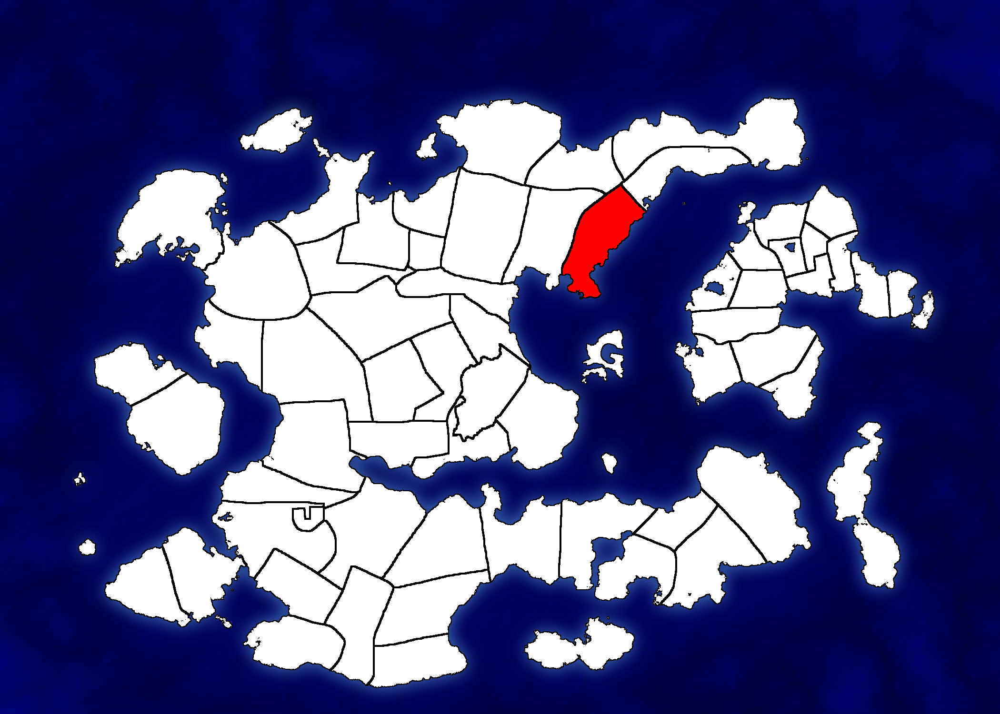
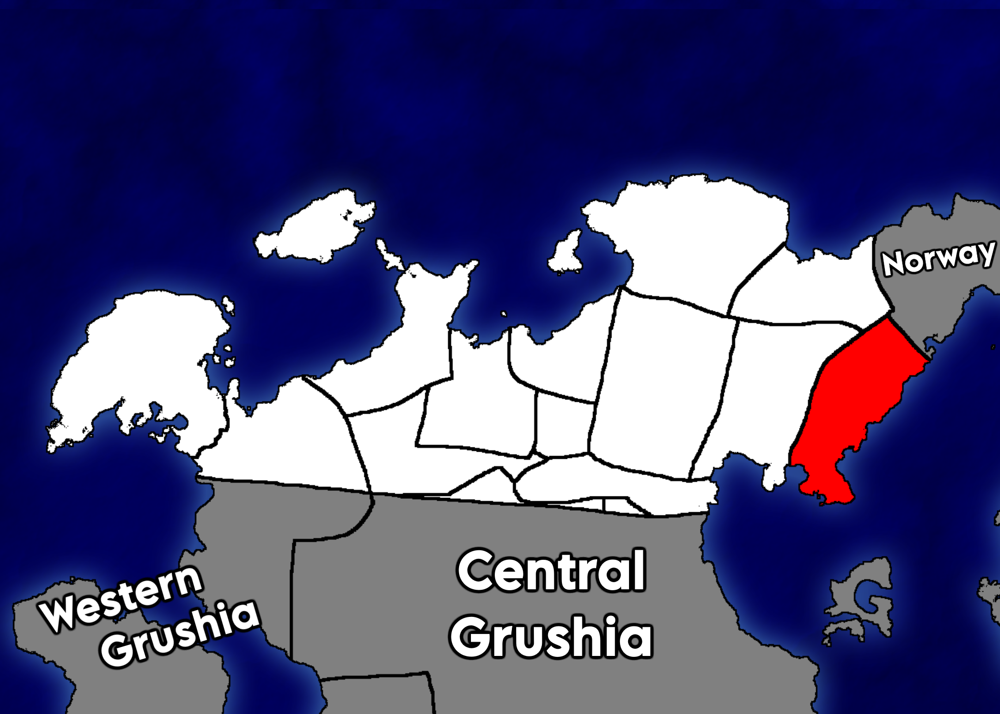
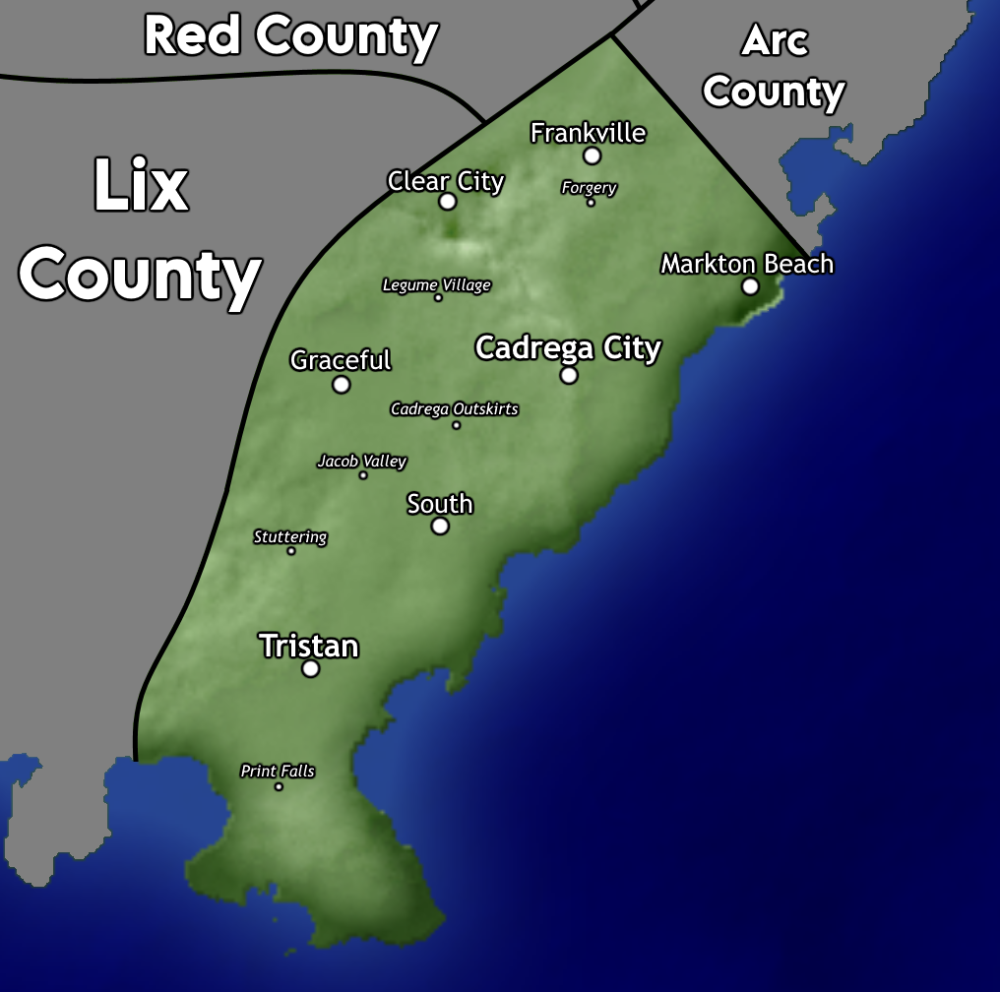

Cadrega County, Northern Grushia
Cadrega County is a county located in the Grushian region of Northern Grushia and is the most populous county in Grushia. In the 2020 Grushian Census, it had a population of 16,201,898. It's largest city is Cadrega City, the nation's capital.
Maps

Location within Grushia

Location within the region of Northern Grushia

Detailed map of Cadrega County
History
Cadrega County was the first county created upon Grushia's founding in 1737 alongside Guy County. Previously, Cadrega County encompassed all of mainland Grushia, while Guy County comprised of all islands and disconnected regions, such as all of Grukraine, Sal Island, and Ulmalkia to name a few. In the late 1700s, as more counties were formed, Cadrega County shrunk in size. The creation of Found County in 1790 split the Grushian mainland in half, with Found containing the southern half, and Cadrega containing the northern half. Over the next century, various counties would chisle away at Cadrega County's size, until it was shrunk to it's current state in 2012 when Arc County was formed out of Border and Cadrega Counties.
Geography
Climate and weather
Cadrega County and surrounding counties have recently been experiencing a warm trend in weather due to the ongoing La Niña patterns in the Pacific Ocean. Average temperatures (2016-2021) have ranged from a low of 59°F to a high of 83°F in January, as well as a low of 39°F to a high of 58°F in July.
Due to it's inner location compared to the rest of Grushia, it is only occasionally directly impacted by tropical cyclones during the Grushian hurricane season, however Cadrega County does often receive effects of remnants or weakened cyclones that have made landfall elsewhere.
Adjacent counties